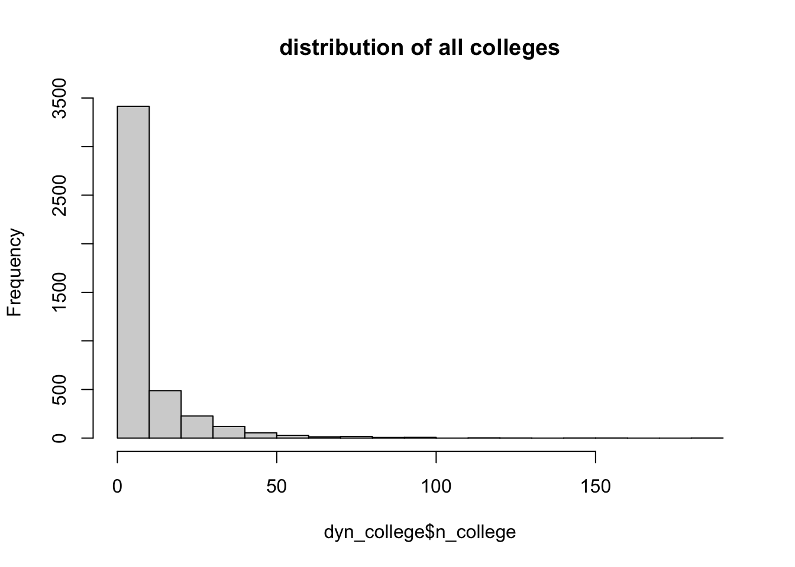

Code
#reading the libraries
knitr::opts_chunk$set(cache = FALSE,echo = TRUE, message=FALSE, warning = FALSE)
suppressMessages(library(dplyr))
library(stringr)
suppressMessages(library(stargazer))#reading the libraries
knitr::opts_chunk$set(cache = FALSE,echo = TRUE, message=FALSE, warning = FALSE)
suppressMessages(library(dplyr))
library(stringr)
suppressMessages(library(stargazer))#reading the college data'
path = "/Users/najah/work/cpr/data/"
college_pc= read.csv(paste0(path,"college_pc_ag.csv"))
colleges = read.csv(paste0(path, "college_clean.csv"))print(paste("Number of colleges that are mapped on the constituencies:", nrow(colleges)))[1] "Number of colleges that are mapped on the constituencies: 36857"print(names(colleges)) [1] "X" "country" "state" "district"
[5] "univ_type" "univ_name" "inst_name" "inst_type"
[9] "address" "website" "management" "year_estd"
[13] "specialisation" "location" "year_upload" "lat"
[17] "long" "delim" "st_code" "st_name"
[21] "pc_no" "pc_name" "year_el" table(colleges$del)
post_delim pre_delim
17120 19737 n_col_yr = as.data.frame(table(colleges$year_estd))
barplot( n_col_yr$Freq, names.arg = n_col_yr$Var1, main = "Number of colleges established by year")# colleges by type
table(colleges$management)
Central Government Local Body Private Aided Private Un-Aided
144 1708 2720 28449
State Government
3836 # government colleges
gov_college =ifelse(grepl("\\bprivate\\b", colleges$management, ignore.case = TRUE),0,1)
table(gov_college)gov_college
0 1
31169 5688 #reading the all india dynast data
tcpd_dyn = read.csv(paste0(path,"tcpd_ge_dyn_23.csv"))
# ordering the data
tcpd_dyn = tcpd_dyn %>% arrange(state_name, year, constituency_no, position)#cleanining the names in the tcpd data to merge with the college data
tcpd_dyn = tcpd_dyn %>%
#replaces & with and
mutate(state_name = str_replace(state_name, "&", "and")
#transforms to lowercase
,state_name = tolower(state_name),
#removes the white space
state_name= str_trim(state_name))
# recoding empty ones and recheck as dyn
tcpd_dyn$dyn = as.numeric(tcpd_dyn$dyn)
tcpd_dyn$dynast = ifelse(is.na(tcpd_dyn$dyn) | tcpd_dyn$dyn==0,0,1)# add a col that indicates the second position familty type
tcpd_dyn = tcpd_dyn %>% group_by(state_name, year, constituency_no) %>%
mutate(second_position_dyn = sum(dynast[position==2]) )%>%
ungroup()
#tcpd_dyn[,c("position","dynast", "second_position_dyn")]
#filter to winner to keep observation per constituency
dyn_1 = tcpd_dyn %>% filter(position==1)
# creating the contest variable
position = dyn_1$position
second_position = dyn_1$second_position_dyn
winner = dyn_1$dynast
dyn_1$dyn_type = ifelse(winner==1 & second_position==0, "dyn vs non-dyn",ifelse(winner==0 &second_position==1, "non-dyn vs dyn", "others"))
dyn_1[,c("dynast", "second_position_dyn", "dyn_type")][10:15,]# A tibble: 6 × 3
dynast second_position_dyn dyn_type
<dbl> <dbl> <chr>
1 0 0 others
2 0 0 others
3 0 1 non-dyn vs dyn
4 1 0 dyn vs non-dyn
5 0 0 others
6 0 0 others # limit analysis to 23 relevant states
state_list = read.csv("./data/states_list.csv")
states = state_list[,2]
dyn_1$state_name = gsub("_&_|_", " ", tolower(dyn_1$state_name))
dyn_1 = dyn_1[dyn_1$state_name %in% states,]#merging the dataset
dyn_college<- left_join( dyn_1,college_pc, by = c( "state_name"="state", "year"="year_el",
"constituency_no"="pc_no"))
#filling constituencies with NA vlaue to zero - since there was no college established during this time
dyn_college$n_college = ifelse(is.na(dyn_college$n_college),0,dyn_college$n_college)
dyn_college$n_gov = ifelse(is.na(dyn_college$n_gov),0,dyn_college$n_gov)
# creating a variable with number of private colleges
dyn_college$n_priv = abs(dyn_college$n_college-dyn_college$n_gov)This df contains number of colleges established in each year for every constituency from 1989-2019 along with the information about the winner of the constituency
summary(dyn_college$n_college) Min. 1st Qu. Median Mean 3rd Qu. Max.
0.000 0.000 2.000 7.395 9.000 182.000 # distribution of the number of colleges
hist(dyn_college$n_college, main= "distribution of all colleges")
hist(dyn_college$n_gov, main = "distribution of government colleges")## understanding the dynast data
table(dyn_college$dynast)
0 1
3130 1250 ### average number of colleges
print(mean(dyn_college$n_college))[1] 7.395434print(median(dyn_college$n_college))[1] 2# mean and median number of colleges by dynast
dyn_college %>% group_by(dynast) %>%
summarise(mean_colleges = mean(n_college),
meadian_colleges = median(n_college))# A tibble: 2 × 3
dynast mean_colleges meadian_colleges
<dbl> <dbl> <dbl>
1 0 7.16 2
2 1 7.97 2yearwise_college = dyn_college %>% group_by(year,dynast) %>%
summarise(mean_college = mean(n_college)) %>%
tidyr::pivot_wider(names_from = dynast, values_from = mean_college) %>%
rename( "dynast"= `1`, "non-dynast" = `0`)
yearwise_college# A tibble: 9 × 3
# Groups: year [9]
year `non-dynast` dynast
<int> <dbl> <dbl>
1 1989 0.992 1.34
2 1991 3.56 3.11
3 1996 1.57 1.66
4 1998 0.908 0.794
5 1999 6.50 7.59
6 2004 20.6 19.6
7 2009 17.5 17.2
8 2014 14.0 12.2
9 2019 1.94 1.92 ## need to noramlise college
#per million electors
# dyn_college$n_college_million = dyn_college$n_college/(dyn_college$electors/1000000)
dyn_college$n_college_million = dyn_college$n_college*1000000/dyn_college$electors
dyn_college$n_gov_million = dyn_college$n_gov*1000000/dyn_college$electors
dyn_college$n_priv_million = dyn_college$n_priv*1000000/dyn_college$electors# all colleges model
fit_all <- glm(n_college_million~dynast+ constituency_type+enop+turnout_percentage +factor(year)+factor(state_name), family = "poisson", data = dyn_college)
# govt colleges only model
fit_gov = glm(n_gov_million~dynast+constituency_type+enop+turnout_percentage+factor(year)+factor(state_name), family = "poisson", data = dyn_college)
# private colleges only model
fit_priv = glm(n_priv_million~dynast+constituency_type+enop+turnout_percentage+factor(year)+factor(state_name), family = "poisson", data = dyn_college)
#summary(model)
addlines <- list(c('Fixed effects - Year' ,"TRUE", "TRUE", "TRUE" ), c("Fixed Effects - State", "TRUE", "TRUE", "TRUE"))
stargazer::stargazer(fit_all, fit_gov,fit_priv,type = "text",keep = c("dynast", "(Intercept)", "n_gov", "constituency_type", "enop", "turnout_percentage"), add.lines = addlines)
====================================================================
Dependent variable:
----------------------------------------------
n_college_million n_gov_million n_priv_million
(1) (2) (3)
--------------------------------------------------------------------
dynast -0.003 -0.005 -0.008
(0.015) (0.038) (0.016)
constituency_typeSC -0.129*** -0.102** -0.132***
(0.019) (0.049) (0.020)
constituency_typeST -0.501*** -0.068 -0.638***
(0.033) (0.064) (0.039)
enop -0.072*** 0.123*** -0.112***
(0.012) (0.028) (0.013)
turnout_percentage -0.006*** 0.011*** -0.009***
(0.001) (0.002) (0.001)
--------------------------------------------------------------------
Fixed effects - Year TRUE TRUE TRUE
Fixed Effects - State TRUE TRUE TRUE
Observations 4,380 4,380 4,380
Log Likelihood -Inf.000 -Inf.000 -Inf.000
Akaike Inf. Crit. Inf.000 Inf.000 Inf.000
====================================================================
Note: *p<0.1; **p<0.05; ***p<0.01# all colleges model
fit_all <- lm(n_college_million~dynast+ constituency_type+enop+turnout_percentage +factor(year)+factor(state_name), data = dyn_college)
# govt colleges only model
fit_gov = lm(n_gov_million~dynast+constituency_type+enop+turnout_percentage+factor(year)+factor(state_name), data = dyn_college)
# private colleges only model
fit_priv = lm(n_priv_million~dynast+constituency_type+enop+turnout_percentage+factor(year)+factor(state_name), data = dyn_college)
#summary(model)
addlines <- list(c('Fixed effects - Year' ,"TRUE", "TRUE", "TRUE" ), c("Fixed Effects - State", "TRUE", "TRUE", "TRUE"))
stargazer::stargazer(fit_all, fit_gov,fit_priv,type = "text",keep = c("dynast", "(Intercept)", "n_gov", "constituency_type", "enop", "turnout_percentage"), add.lines = addlines)
==============================================================================
Dependent variable:
----------------------------------------------
n_college_million n_gov_million n_priv_million
(1) (2) (3)
------------------------------------------------------------------------------
dynast -0.139 -0.010 -0.129
(0.241) (0.046) (0.223)
constituency_typeSC -0.713** -0.087 -0.625**
(0.295) (0.056) (0.273)
constituency_typeST -2.021*** -0.025 -1.996***
(0.438) (0.083) (0.406)
enop -0.529*** 0.057* -0.586***
(0.180) (0.034) (0.167)
turnout_percentage -0.042*** 0.006** -0.048***
(0.015) (0.003) (0.014)
------------------------------------------------------------------------------
Fixed effects - Year TRUE TRUE TRUE
Fixed Effects - State TRUE TRUE TRUE
Observations 4,380 4,380 4,380
R2 0.439 0.327 0.419
Adjusted R2 0.435 0.321 0.415
Residual Std. Error (df = 4345) 6.899 1.309 6.396
F Statistic (df = 34; 4345) 100.191*** 62.000*** 92.272***
==============================================================================
Note: *p<0.1; **p<0.05; ***p<0.01# prepping the data
dyn_college = dyn_college %>%
mutate(margin_5pc = ifelse(margin_percentage<=5,1,0),
margin_2.5pc =ifelse(margin_percentage<=2.5,1,0),
margin_10pc =ifelse(margin_percentage<=10,1,0))
dyn_college[, c("margin_percentage", "margin_2.5pc", "margin_5pc", "margin_10pc")][1:5,]# A tibble: 5 × 4
margin_percentage margin_2.5pc margin_5pc margin_10pc
<dbl> <dbl> <dbl> <dbl>
1 8.29 0 0 1
2 7.73 0 0 1
3 6.53 0 0 1
4 3.67 0 1 1
5 4.31 0 1 1# breakup of all constituencies wrt margin
margin_table= dyn_college %>% summarise_at(c("margin_2.5pc", "margin_5pc", "margin_10pc"), sum, na.rm =TRUE)
margin_table# A tibble: 1 × 3
margin_2.5pc margin_5pc margin_10pc
<dbl> <dbl> <dbl>
1 586 1197 2174# break-up for contest types
margin_table= dyn_college %>% group_by(dyn_type)%>% summarise_at(c("margin_2.5pc", "margin_5pc", "margin_10pc"), sum, na.rm =TRUE)
margin_table# A tibble: 3 × 4
dyn_type margin_2.5pc margin_5pc margin_10pc
<chr> <dbl> <dbl> <dbl>
1 dyn vs non-dyn 114 221 432
2 non-dyn vs dyn 93 199 339
3 others 379 777 1403dyn_college_rdd = dyn_college %>% filter(dyn_type!= "others")
dyn_college_rdd = dyn_college_rdd%>% filter(margin_percentage<=10 ) %>%
mutate(mv_rdd = ifelse(dyn_type=="non-dyn vs dyn", -margin_percentage, margin_percentage))## rdd graph
library(ggplot2)
ggplot(dyn_college_rdd, aes(mv_rdd,n_college , color = dyn_type))+
geom_point()+
ylim(0,10)+
geom_smooth(method="glm", se= FALSE)+
geom_vline(xintercept = 0)+
# scale_color_grey(labels = c("non-family winner", "family winner"))+
labs(x = "Margin of victory", y = "n collegs per million population",
caption = "note: collegesbuilt in year in a parliamentary constituency")+
theme_bw()+
theme(legend.position = "bottom", legend.title = element_blank()) #ylim(0,10)## rdd regression
fit2.5 <- glm(n_college_million~relevel(as.factor(dyn_type), ref = "non-dyn vs dyn"), data = subset(dyn_college_rdd %>% filter(margin_2.5pc ==1)),family = "poisson")
fit5 <- glm(n_college_million~relevel(as.factor(dyn_type), ref = "non-dyn vs dyn"), data = subset(dyn_college_rdd %>% filter(margin_5pc ==1)), family = "poisson")
fit10 <- glm(n_college_million~relevel(as.factor(dyn_type), ref = "non-dyn vs dyn"), data = subset(dyn_college_rdd %>% filter(margin_10pc ==1)),family = "poisson")
stargazer::stargazer(fit2.5,fit5, fit10, type = "text", omit = "Constant", column.labels = c("2,5","5","10"), covariate.labels = c("dynast winner") )
===============================================
Dependent variable:
-----------------------------
n_college_million
2,5 5 10
(1) (2) (3)
-----------------------------------------------
dynast winner 0.186*** 0.242*** 0.084***
(0.056) (0.039) (0.030)
-----------------------------------------------
Observations 207 420 771
Log Likelihood -Inf.000 -Inf.000 -Inf.000
Akaike Inf. Crit. Inf.000 Inf.000 Inf.000
===============================================
Note: *p<0.1; **p<0.05; ***p<0.01## rdd regression private colleges
fit2.5 <- glm(n_priv_million~relevel(as.factor(dyn_type), ref = "non-dyn vs dyn"), data = subset(dyn_college_rdd %>% filter(margin_2.5pc ==1)),family = "poisson")
fit5 <- glm(n_priv_million~relevel(as.factor(dyn_type), ref = "non-dyn vs dyn"), data = subset(dyn_college_rdd %>% filter(margin_5pc ==1)), family = "poisson")
fit10 <- glm(n_priv_million~relevel(as.factor(dyn_type), ref = "non-dyn vs dyn"), data = subset(dyn_college_rdd %>% filter(margin_10pc ==1)),family = "poisson")
stargazer::stargazer(fit2.5,fit5, fit10, type = "text", omit = "Constant", column.labels = c("2,5","5","10"), covariate.labels = c("dynast winner") )
===============================================
Dependent variable:
-----------------------------
n_priv_million
2,5 5 10
(1) (2) (3)
-----------------------------------------------
dynast winner 0.199*** 0.253*** 0.090***
(0.061) (0.042) (0.032)
-----------------------------------------------
Observations 207 420 771
Log Likelihood -Inf.000 -Inf.000 -Inf.000
Akaike Inf. Crit. Inf.000 Inf.000 Inf.000
===============================================
Note: *p<0.1; **p<0.05; ***p<0.01## rdd regression govt. colleges
fit2.5 <- glm(n_gov_million~relevel(as.factor(dyn_type), ref = "non-dyn vs dyn"), data = subset(dyn_college_rdd %>% filter(margin_2.5pc ==1)),family = "poisson")
fit5 <- glm(n_gov_million~relevel(as.factor(dyn_type), ref = "non-dyn vs dyn"), data = subset(dyn_college_rdd %>% filter(margin_5pc ==1)), family = "poisson")
fit10 <- glm(n_gov_million~relevel(as.factor(dyn_type), ref = "non-dyn vs dyn"), data = subset(dyn_college_rdd %>% filter(margin_10pc ==1)),family = "poisson")
stargazer::stargazer(fit2.5,fit5, fit10, type = "text", omit = "Constant", column.labels = c("2,5","5","10"), covariate.labels = c("dynast winner") )
===============================================
Dependent variable:
-----------------------------
n_gov_million
2,5 5 10
(1) (2) (3)
-----------------------------------------------
dynast winner 0.106 0.174* 0.049
(0.147) (0.104) (0.079)
-----------------------------------------------
Observations 207 420 771
Log Likelihood -Inf.000 -Inf.000 -Inf.000
Akaike Inf. Crit. Inf.000 Inf.000 Inf.000
===============================================
Note: *p<0.1; **p<0.05; ***p<0.01## rdd regression
fit2.5 <- lm(n_college_million~relevel(as.factor(dyn_type), ref = "non-dyn vs dyn"), data = subset(dyn_college_rdd %>% filter(margin_2.5pc ==1)))
fit5 <- lm(n_college_million~relevel(as.factor(dyn_type), ref = "non-dyn vs dyn"), data = subset(dyn_college_rdd %>% filter(margin_5pc ==1)))
fit10 <- lm(n_college_million~relevel(as.factor(dyn_type), ref = "non-dyn vs dyn"), data = subset(dyn_college_rdd %>% filter(margin_10pc ==1)))
stargazer::stargazer(fit2.5,fit5, fit10, type = "text", omit = "Constant", column.labels = c("2,5","5","10"), covariate.labels = c("dynast winner") )
===============================================================================
Dependent variable:
-----------------------------------------------------------
n_college_million
2,5 5 10
(1) (2) (3)
-------------------------------------------------------------------------------
dynast winner 1.153 1.529 0.505
(1.394) (1.035) (0.745)
-------------------------------------------------------------------------------
Observations 207 420 771
R2 0.003 0.005 0.001
Adjusted R2 -0.002 0.003 -0.001
Residual Std. Error 9.975 (df = 205) 10.594 (df = 418) 10.262 (df = 769)
F Statistic 0.685 (df = 1; 205) 2.180 (df = 1; 418) 0.459 (df = 1; 769)
===============================================================================
Note: *p<0.1; **p<0.05; ***p<0.01## rdd regression private colleges
fit2.5 <- lm(n_priv_million~relevel(as.factor(dyn_type), ref = "non-dyn vs dyn"), data = subset(dyn_college_rdd %>% filter(margin_2.5pc ==1)))
fit5 <- lm(n_priv_million~relevel(as.factor(dyn_type), ref = "non-dyn vs dyn"), data = subset(dyn_college_rdd %>% filter(margin_5pc ==1)))
fit10 <- lm(n_priv_million~relevel(as.factor(dyn_type), ref = "non-dyn vs dyn"), data = subset(dyn_college_rdd %>% filter(margin_10pc ==1)))
stargazer::stargazer(fit2.5,fit5, fit10, type = "text", omit = "Constant", column.labels = c("2,5","5","10"), covariate.labels = c("dynast winner") )
===============================================================================
Dependent variable:
-----------------------------------------------------------
n_priv_million
2,5 5 10
(1) (2) (3)
-------------------------------------------------------------------------------
dynast winner 1.056 1.374 0.463
(1.249) (0.948) (0.680)
-------------------------------------------------------------------------------
Observations 207 420 771
R2 0.003 0.005 0.001
Adjusted R2 -0.001 0.003 -0.001
Residual Std. Error 8.937 (df = 205) 9.698 (df = 418) 9.365 (df = 769)
F Statistic 0.715 (df = 1; 205) 2.103 (df = 1; 418) 0.465 (df = 1; 769)
===============================================================================
Note: *p<0.1; **p<0.05; ***p<0.01## rdd regression govt. colleges
fit2.5 <- lm(n_gov_million~relevel(as.factor(dyn_type), ref = "non-dyn vs dyn"), data = subset(dyn_college_rdd %>% filter(margin_2.5pc ==1)))
fit5 <- lm(n_gov_million~relevel(as.factor(dyn_type), ref = "non-dyn vs dyn"), data = subset(dyn_college_rdd %>% filter(margin_5pc ==1)))
fit10 <- lm(n_gov_million~relevel(as.factor(dyn_type), ref = "non-dyn vs dyn"), data = subset(dyn_college_rdd %>% filter(margin_10pc ==1)))
stargazer::stargazer(fit2.5,fit5, fit10, type = "text", omit = "Constant", column.labels = c("2,5","5","10"), covariate.labels = c("dynast winner") )
===============================================================================
Dependent variable:
-----------------------------------------------------------
n_gov_million
2,5 5 10
(1) (2) (3)
-------------------------------------------------------------------------------
dynast winner 0.097 0.154 0.041
(0.203) (0.138) (0.102)
-------------------------------------------------------------------------------
Observations 207 420 771
R2 0.001 0.003 0.0002
Adjusted R2 -0.004 0.001 -0.001
Residual Std. Error 1.450 (df = 205) 1.407 (df = 418) 1.410 (df = 769)
F Statistic 0.230 (df = 1; 205) 1.255 (df = 1; 418) 0.164 (df = 1; 769)
===============================================================================
Note: *p<0.1; **p<0.05; ***p<0.01